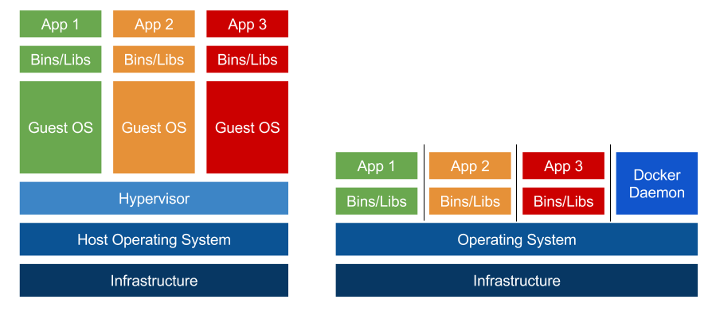

Nástroj navržený pro snažší vytváření, publikování a spouštění aplikací prostřednictvím SW kontejnerů.
Kontejnery umožňují vývojářům zabalit aplikaci se všemi závislostmi do jednoho balíčku. Tímto je zajištěno, že aplikace bude fungovat stejně na PC vývojáře i na produkčních serverech.

Kontejnery
- sdílené HW prostředky
- není nutné instalovat OS
- rychlejší spuštění nové instance
- využití pro microservices
VMs
- od začátku alokované HW prostředky
- vždy kompletní OS + Applikace
- pomalejší spouštění nových instancí
- větší izolace
Jedná se o základ pro docker kontejner.
- read-only šablony, ze kterých jsou spuštěny jednotlivé kontejnery
- každý image se skládá z několika vrstev - cache
- každou modifikací image vzniká nová vrstva
Jak získat image
- http://hub.docker.com
- Dockerfile
- Interaktivně ze spuštěného kontejneru (docker commit)
FROM python:3.6.5-alpine3.7
# pridame zdrojovy kod aplikace
ADD src /usr/src/app
# doinstalujeme potrebne knihovny z requirements.txt
RUN cd /usr/src/app && pip install -r requirements.txt
ENV PYTHONPATH=/usr/src/app
WORKDIR /usr/src/app
CMD ["python", "run.py"]
Build
docker build -t docker.local/python-simple-app:1.0 .
Run
docker run --rm -it -p 80:80 docker.local/python-simple-app:1.0
Run (detached with volume)
docker run --rm -d -p 80:80 -v $(pwd)/src:/usr/src/app docker.local/python-simple-app:1.0
- nástroj pro definování aplikace složené z více kontejnerů
- konfigurační soubor ve formátu YAML
- spustění kompletní multi-kontejnerové aplikace jedním příkazem
- možnost různých nastavení pro dev, test a prod prostředí
version: '3'
services:
nginx:
build:
context: .
dockerfile: Dockerfile.nginx
image: docker.local/nginx:1.13.12
ports:
- 8002:80
depends_on:
- web
web:
build:
context: .
dockerfile: Dockerfile.web_app
image: docker.local/flask-redis:1.0
depends_on:
- redis
redis:
image: "redis:alpine"
Spuštění aplikace
docker-compose up
docker-compose up --build # znovu zbuilduje image
docker-compose up --build -d # znovu zbuilduje image a spustí vše na pozadí
Logy
docker-compose logs
docker-compose logs -f # zobrazi logy ve "follow" módu
docker-compose logs -f <service_name> # zobrazí logy konkrétní služby
Ukončení aplikace
docker-compose down # ukončí aplikaci a odstraní kontejnery
docker-compose down --volumes # navíc smaže i volumes spjaté s kontejnery v docker-compose.yml
Swarm je skupina serverů (virtuálů), na kterých běží Docker, spojených do clusteru.
- scaling - možnost spustit aplikaci ve více instancích
- load balancing - rozložení zátěže mezi jednotlivé nody
- rolling update - postupná aktualizace aplikace na jednotlivých nodech
Manager
- správa jednotlivých nodů a služeb
- může být zároveň i Worker
Worker
- vykonávají jednotlivé služby zaslané managerem
version: '3'
services:
nginx:
build:
context: .
dockerfile: Dockerfile.nginx
image: docker.local/nginx:1.13.12
ports:
- 8002:80
depends_on:
- web
web:
build:
context: .
dockerfile: Dockerfile.web_app
image: docker.local/flask-redis:1.0
deploy:
replicas: 6
environment:
- CONTAINER_HOST='{{.Node.Hostname}}'
depends_on:
- redis
redis:
image: "redis:alpine"
Spuštění aplikace
docker stack deploy -c <docker-compose-file> <stack-name>
Seznam spuštěných aplikací
docker service ls
Škálování aplikace
docker service scale <service-name=num-of-replicas>
Smazání stacku
docker stack rm <stack-name>
Proč?
- Reprodukovatelnost
- Izolace aplikace
- Bezpečnost (pozor na kombinaci Docker + ufw)
- CI/CD
- Testování, code reviews, generování dokumentace
Kdy?
- Zkoušení nových technologií
- Izolace aplikace - řešení závislostí
- Rychlé spuštění vývojového prostředí
docker ps # vypise seznam bezicich kontejneru
docker ps -a # vypise seznam vsech kontejneru
docker start <container_name> # spusti zastaveny kontejner podle jmena
docker stop <container_name> # zastavi spusteny kontejner podle jmena
docker rm <container_name> # smaze zastaveny kontejner podle jmena
docker images # vypise seznam imagu
docker rmi <image_id> # smaze konkretni image
GUI
- Kitematic - Win & OS X
- Portainer.io - web based